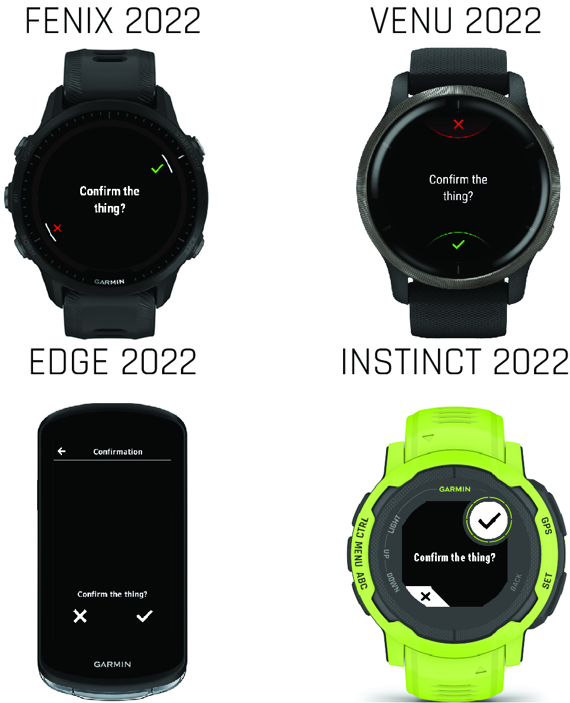
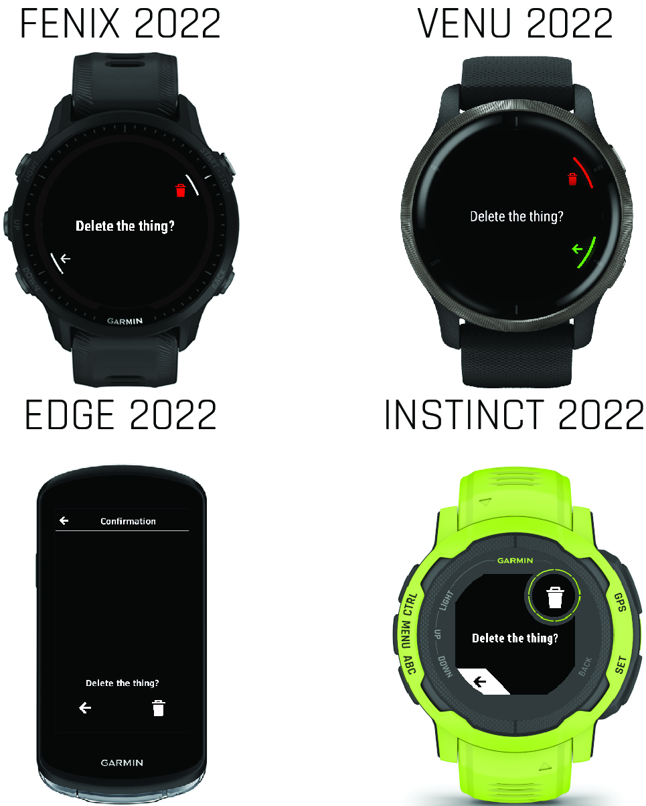

Confirmations
Confirmations ask the user for a yes or no response to a question. Confirmations are usually text only. Confirmations are a useful way of adding small amounts of friction to important decisions, to make sure the user understands their significance.
A yes/no confirmation gives the user an opportunity to confirm an action.
Example
The following example uses WatchUi.Confirmation to display a yes/no confirmation.
// InputDelegate.mc
using Toybox.WatchUi;
var message = "Continue?";
dialog = new WatchUi.Confirmation(message);
WatchUi.pushView(
dialog,
new ConfirmationDelegate(),
WatchUi.SLIDE_IMMEDIATE
);Delete Confirmation

A delete confirmation asks the user to confirm whether they want to delete an item.
Example
WatchUi.Confirmation does not support delete confirmations, but you can build your own confirmation using selectors.
<!-- layout.xml -->
<!-- A Delete Confirmation page -->
<layout id="DeleteConfirmationPage">
<!-- Confirm -->
<bitmap id="confirmIcon" personality="
confirmation_icon__hint_confirm
confirmation_loc__hint_confirm
" />
<!-- Delete -->
<bitmap id="deleteIcon" personality="
confirmation_icon__hint_delete
confirmation_loc__hint_delete
" />
<!-- Prompt body -->
<text-area text="@Strings.deletePrompt" personality="
confirmation_color_dark__body
confirmation_size__body
confirmation_loc__body
confirmation_font__body
" />// InputDelegate.mc
function onKey(evt as KeyEvent) as Boolean {
if (Styles.confirmation_input__confirm has :button &&
evt.getKey() == Styles.confirmation_input__confirm.button) {
doConfirmAction();
return true;
} else if (Styles.confirmation_input__reject has :button &&
evt.getKey() == Styles.confirmation_input__reject.button) {
doRejectAction();
return true;
}
return false;
}
function onTap(evt as ClickEvent) as Boolean {
if (!(Styles.confirmation_input__confirm has :button) &&
$.isInRejectArea(evt.getCoordinates())) {
doConfirmAction();
return true;
} else if (!(Styles.confirmation_input__reject has :button) &&
$.isInRejectArea(evt.getCoordinates())) {
doRejectAction();
return true;
}
return false;
}// Helper Functions
import Rez.Styles;
//! Function to see if a tap falls within the touch area for
//! the confirm touch area.
//! @param x X coord of tap
//! @param y Y coord of tap
//! @return true if tapped, false otherwise
function isInConfirmArea(coord as Array<Numeric>) as Boolean {
if (Styles.confirmation_input__confirm has :x1 &&
Styles.confirmation_input__confirm has :y1 &&
Styles.confirmation_input__confirm has :x2 &&
Styles.confirmation_input__confirm has :y2) {
var x = coord[0];
var y = coord[1];
if (x >= Styles.confirmation_input__confirm.x1 &&
x <= Styles.confirmation_input__confirm.x2 &&
y >= Styles.confirmation_input__confirm.y1 &&
y <= Styles.confirmation_input__confirm.y2) {
return true;
}
}
return false;
}
//! Function to see if a tap falls within the touch area for
//! the reject touch area.
//! @param x X coord of tap
//! @param y Y coord of tap
//! @return true if tapped, false otherwise
function isInRejectArea(coord as Array<Numeric>) as Boolean {
if (Styles.confirmation_input__reject has :x1 &&
Styles.confirmation_input__reject has :y1 &&
Styles.confirmation_input__reject has :x2 &&
Styles.confirmation_input__reject has :y2) {
var x = coord[0];
var y = coord[1];
if (x >= Styles.confirmation_input__reject.x1 &&
x <= Styles.confirmation_input__reject.x2 &&
y >= Styles.confirmation_input__reject.y1 &&
y <= Styles.confirmation_input__reject.y2) {
return true;
}
}
return false;
}